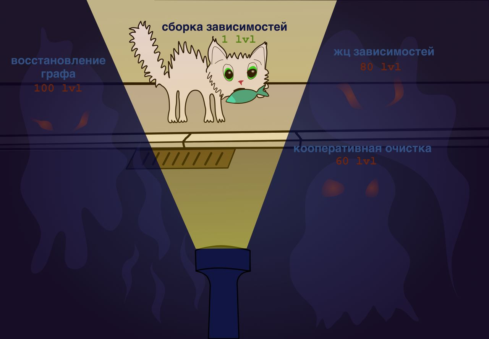

Решают ли DI-фреймворки больше проблем, чем создают?

В моём канале с мемами много шуток про то, что в спорах между Dagger 2 и Koin на самом деле побеждают фабрики. Так вот, это не шутки. Я считаю что DI-фреймворки в android - это подражание спрингерам, дань моде, следствие хронического ООП-клинкода головного мозга и просто переоценённое излишество. Жёсткий наброс вкинут, давайте разбираться, правда ли это.
Что вообще решают DI-фреймворки?
DI фреймворки в основном решают очень простую проблему - как написать код, который собирает объект из зависимостей. Это очень простой код, который легко написать и потом читать и дебажить. Есть ли в этом вообще проблема? Ну да, кажется, что это “бойлерплейт”. Слишком скучно и неинтересно. Но когда скучный код был проблемой? Проблемой обычно бывает как раз “интересный” код. Его надо прочесть, понять, переспать с ним, вдуматься, ошибиться в нём пару раз. Со скучными фабриками проблемы нет. Я готов их писать каждый день.
Что если вы не такой устойчивый к рутине?
Ладно, допустим, рутина написания фабрик для вас - это проблема. Настолько
большая, что вы не представляете, что можете отказаться от DI-фреймворка и
начать писать всё руками. Но вы пробовали? В Kotlin, благодаря интерфейс- и
проперти-делегатам неплохо получается писать код фабрик кратко. И при этом вам и
вашим джунам не придётся учить доменный язык Koin или язык аннотаций Dagger.
Серьёзно, я помню джуновскую дрожь в коленках от словосочетания Inherited
subcomponent multibindings в документации Dagger. Я честно говоря до сих пор не
понимаю, какие задачи стоят перед теми кто в такое упарывается. Да и в простых
случаях помню как смотрел как баран на новые ворота и пытался понять, а какой
магией зависимости прилетают ко мне в конструктор? Почему иногда я вешаю
@Inject надо конструктором и всё работает, а иногда мне выплёвывают портянку
красного кода где ни слова о том, что мне просто нужно поставить ещё одну такую
же аннотацию и всё снова будет работать? Ух, аж передёрнуло от волны флешбеков.
Koin я начал изучать на более сознательном этапе карьеры, но всё равно надо было
посидеть поразбираться, чем их модули и компоненты отличаются от Dagger и Ninject.
А так был бы только Kotlin, только –хардкор– прагматичный подход.
Какие проблемы не решают DI-фреймворки?
При этом мы расплачиваемся более высоким порогом входа только за решение тривиальной задачи “собери из спичек домик”. На более сложные, смежные с DI вопросы типа навигации иили передачи данных из одного скоупа в другой, восстановления графа зависимостей, жизненного цикла зависимостей, кооперативного очищения скоупов зачастую во фреймворке готового ответа нет или ответы в лучшем случае medium rare. Эти проблемы приходится решать самому, и тут есть 100500 решений и в каждом проекте будет немного по-другому. А это задача сложная, из тех что “на подумать”. Хорошо если у вас в команде будет условный Владимир Тагаков, который всё вам настроит и будет бить по рукам за неправильное использование и срезание углов. Но в современной разработке мы часто слишком мало думаем, у нас нет возможности лечь в гамак как Рич Хикки и думать о наилучшем способе показать пользователю промку с акцией на чёрную пятницу. Сложная проблема + сложный инструмент + ограниченные ресурсы = неоптимальные решения, которые стрельнут через пару лет, треснув под грузом нового кода как плохо залитый фундамент.
А как же Hilt?
Есть же Hilt, скажите вы. Моё мнение в том, что Hilt - отстой и тому есть несколько причин. Да, Hilt вроде бы упрощает работу с Dagger, нацелен на новичков и даёт решение для указанных мною выше проблем типа жизненного цикла. Но Hilt это враппер над Dagger. И есть два вида таких “врапперов” - один – который скрывает за собой минимальный, но мощный низкоуровневый апи, надстраиваясь над ним, как теоремы над аксиомами. Второй - который прячет под ковер какой-то ужас древних, сошедший со страниц книжек Лавкрафта чтобы не испугать новичков, которых будут приносить в жертву легаси-богам. Как подсказывает опыт, первый намного, нет, НАМНОГО лучше. Почему? Потому что абстракции всегда текут. И когда у тебя протекает абстракция, то тебе надо надевать каску и идти в подвал. И лучше увидеть там три тумблера, чем древнего бога Ктулху, нашепчивающего тебе мысли о самоубийстве.
Но так удобнее же тем кто знаком с Dagger
Может быть у них были мысли что кто-то захочет мигрировать с Dagger на Hilt. Но, как правило, если уж вы замазались в Dagger, то у вас уже есть свой вагон костылей, которые его подпирают. Так что Hilt вообще +- про новые проекты. А DI-фреймворки такая штука, которую выпиливать очень тяжело - она проникает на все слои и во все уголки кодовой базы. Перехать с одного фреймворка на другой - монотонная, местами нетривиальная задача, которая сжирает кучу ресурсов. Возьмется ли за неё кто-то, учитывая что у многих есть свои костыли и подпорки с которыми им худо-бедно, но живется - сомневаюсь. Ради ключевого слова в резюме разве что. Либо если проект очень маленький. Но тогда зачем вам вообще DI-фреймворк?
В конце победили фабрики
Поэтому я склоняюсь к тому что те DI фреймворки, что есть мейнстрим android разработке лучше бы выкинуть к херам и заменить на фабрики. Может, написать пару утилит типа by lazyReference делегатов, но не более. Собирать зависимости - тупая задача. И чем проще и тупее её решение, тем лучше.